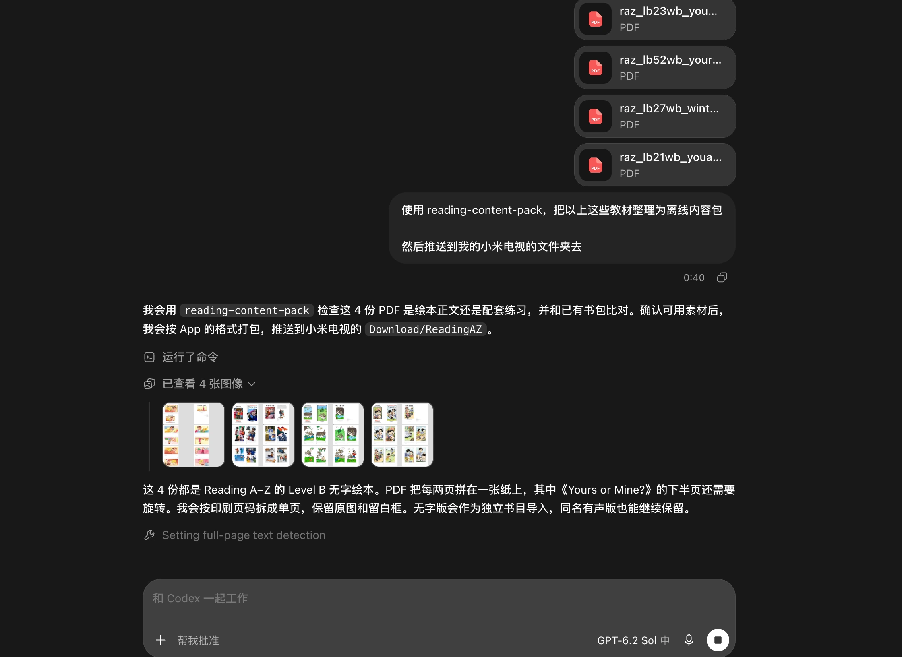

English picture bookson the big screen
Pick a book with the remote, turn the page and read along at your own pace.

Turn the page.
Read along.
The picture and the sentence appear together on the big screen. Come back anytime and pick up where you left off.
- ← →
- Go to the previous or next page
- OK
- Play or pause the narration for this page
- Back
- Return to the bookshelf

Install on your TV
You’ll need an Android TV or an Android TV box. Install from a USB drive, or have an AI assistant on your computer handle setup.
- Requirements
- Android 6.0 or later
- Tested device
- Xiaomi MiTV-AETP0 running Android 9
Includes six Level A picture books with original narration. To find one by title, try B, G, I, M, S or U.

Installing from USB? Skip to step 3.
1. Turn on ADB debugging
Connect your computer and TV to the same home network. Open Settings on the TV and follow the steps for your brand.
Xiaomi TV
Go to Settings → About. Select Product model and press OK repeatedly until developer mode turns on. Go back to Settings → Accounts & Security and enable ADB debugging.
TCL
Go to Settings → About → Device information. Quickly press Up, Down, Left, then Right on the remote. Open the More menu that appears at the bottom and turn on ADB.
Haier
Press the Input button on the TV itself. When the menu appears, press Left, Left, Up, then Right on the remote. In the factory menu, turn on ADB debugging and exit.
OPPO
Go to Settings → System → About. Select Device model, press Up, Up, Right, Right, then OK. Under System → Developer options, enable USB debugging or ADB debugging.
Other Android TV devices
In Settings, open System or Device Preferences, then About. Highlight Build or Android TV OS build and press OK about seven times. Go back to Developer options and look for Network debugging, Wireless debugging or USB debugging.
If your TV offers Wireless debugging, turn it on. When your assistant asks you to pair, select Pair device with pairing code and share the address, port and code on the TV. After pairing, return to the Wireless debugging screen and give the assistant the connection address and port shown there.
Menu names vary by model and software version. If you can’t find debugging, try the USB method in step 3.
2. Enter your TV’s IP address
On the TV, go to Settings → Network and open the details for your active Wi-Fi or Ethernet connection. Look for the IP address. On some OPPO models it’s at the bottom of that screen. Enter it below to add it to your installation prompt.
3. Choose how to install
- Copy the prompt below into an assistant that can run commands on your computer. It will download and verify the installer.
- Use your remote to approve any debugging or installation prompts on the TV.
Use an assistant that can run commands on this computer.
 WorkBuddy
WorkBuddy- Doubao for desktop
- Qwen for desktop
 Trae
Trae Claude Code
Claude Code Codex
Codex
- Copy the official APK file to a USB drive and plug the drive into your TV.
- Find the APK in your TV’s file manager, open it and follow the on-screen steps.
- Go to the TV’s apps list and open PhoniPop.
If your TV blocks the install, follow its prompt to allow your file manager to install apps from this source. The setting varies by model.
Make your own picture book
Give a desktop AI assistant an English picture book you created or have permission to use. Start with one book and turn it into a ZIP you can read on the TV.
Download the book-making toolkit (Skill, Simplified Chinese)


- Gather your files.Put the book’s PDF or PowerPoint file in its own folder. If you have recordings, add them to that folder and name them by page number.
- Give your assistant the folder and the prompt below.The assistant needs access to local files and the ability to run Python. You can attach the toolkit ZIP if you’ve already downloaded it.
- Review your book.Check the pictures, text and narration on the pages your assistant flags. Then follow the import steps to add the ZIP to your TV.
Use an assistant that can run commands on this computer.
- WorkBuddy
- Doubao for desktop
- Qwen for desktop
- Trae
- Claude Code
- Codex
Add books to your bookshelf
Try it with the sample book below. Keep the book as a ZIP file and open it in PhoniPop.
- Get the ZIP onto your TV.Copy the ZIP to a USB drive and plug it into the TV. If your desktop assistant is already connected to the TV, you can also ask it to transfer the ZIP to the TV’s Download folder and tell you the filename.
- Choose Import books (导入图书) from the bookshelf.Choose USB / local files (U 盘 / 本地文件) with the remote. Browse your USB drive or open Download in the TV’s internal storage. If asked, allow file access. You can also go back and use the system file picker (系统文件选择).
- Select the ZIP and choose Add (添加).Check the list of books to add or update, then confirm. If every book is marked Skip (跳过), the TV already has the same or a newer edition. Choose Done (完成). Once the import finishes, you can unplug the USB drive.


After setup
Can we read offline?
Yes. Imported books are stored on your TV, so you can read and play included narration offline.
Why doesn’t my book have sound?
Narration comes with the book pack. Some packs contain just pictures and text. The Three Little Pigs sample includes narration. Press OK on the remote to listen.
What happens to my books when I update?
Install the new APK from the same source over your current app to keep your books and reading progress. Keep your original ZIP files as a backup.